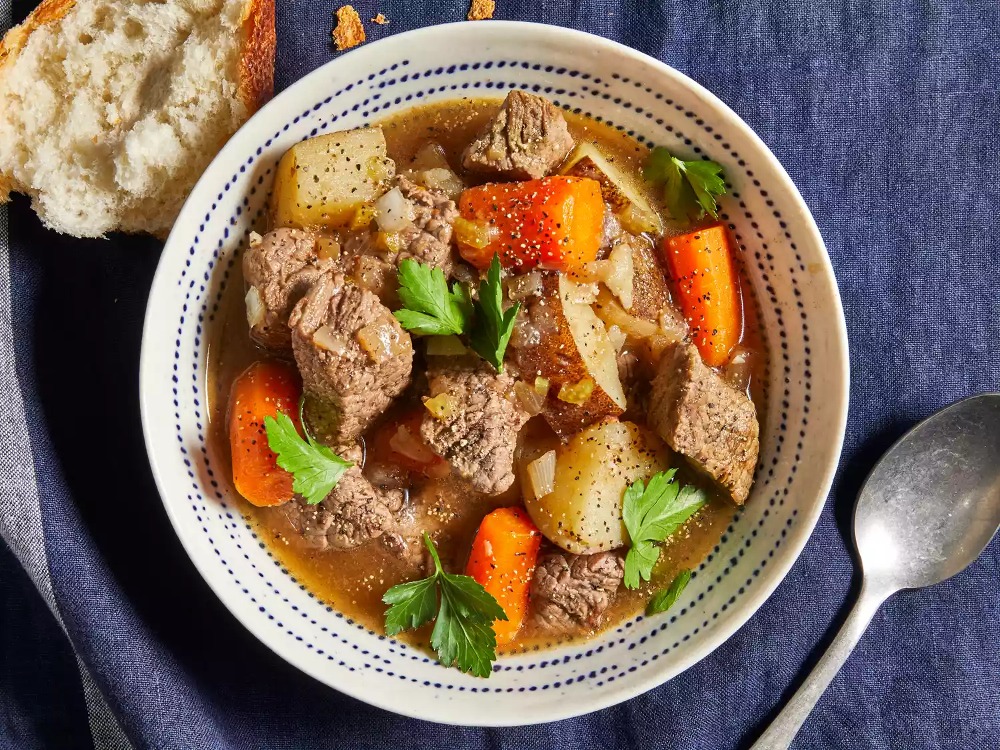

Slow Cooker Beef Stew

Description:
This easy slow cooker beef stew recipe made with potatoes, carrots, celery, broth, herbs, and spices is hearty and comforting. You won't be slow to say 'yum'!
ingredients:
- Stew meat
- Flour
- Seasonings
- Broth
- Vegetables
Steps:
- Combine ingredients: Place the beef in the slow cooker, then toss with flour, salt, and pepper. Add the broth, vegetables, Worcestershire sauce, paprika, garlic, and bay leaf. Stir to combine.
- Set slow cooker: Cover the Crock-Pot and cook on Low for 8 to 12 hours or on High for 4 to 6 hours.
Back